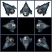

Game version 1: simple rectangle graphics (click to play)
If you are having issues with chrome loading images or other files directly from disk, try adding this to the commmand line:
--allow-file-access-from-files --disable-web-security
On mac this would be
/Applications/Google\ Chrome.app/Contents/MacOS/Google\ Chrome --allow-file-access-from-files --disable-web-security
In this lesson you will use the animation and advanced drawing skills you've learned to create a simple space invaders style game. So that you can focus on the grahpics I have provided a skeleton of the game already. The user has a spaceship that they can move left and right with the arrow keys and fire with the space bar. Aliens at the top of the screen move back and forth while randomly shooting missles. The code has simple collision detection to kill the aliens when the user's blaster hits it, and kill the player if the spaceship hits an alien missle. All graphics are rendered with simple rectangles. Take a quick look and then we'll start to make it pretty.
Game version 1: simple rectangle graphics (click to play)
In the directory with this document and the game*.html files, create a new HTML file called mygame.html and copy game1.html into it. This contains the initial version of the game you saw above.
The first thing we will do is give the player's spaceship and upgrade. To do this we will use an image I took from the amazing website LostGarden.com ([link: more info on LostGarden at the bottom]).

images/Hunter1.png (scaled 4x)
First we need to change the size of the player to fit the image. We only want the upper center sprite in the image which is 46x46 pixels, so add this code near the top of game.html to set the size of the player object.
var can = document.getElementById("canvas");
var c = can.getContext('2d');
//new code
player.width = 46;
player.height = 46;
Now we need to load the image into an object so we can use it. Create a variable called ship_image then the loadResources() function to load the image on startup.
player.width = 46;
player.height = 46;
//new code
var ship_image;
loadResources();
function loadResources() {
ship_image = new Image();
ship_image.src = "images/Hunter1.png";
}Now go down to the drawPlayer function. We will change the last two lines so that instead of filling a rectangle it will draw the image.
c.fillStyle = "red";
c.fillRect(player.x,player.y, player.width, player.height);
c.drawImage(ship_image,
25,1, 23,23, //src coords
player.x, player.y, player.width, player.height //dst coords
);
Let's take a look at what this is doing. Our image actually has 8 versions of the spaceship but we only want to draw one of them. drawImage will draw a subsection of the image by passing in coordinates for the source and destination. The source coordinates define what part of the image it will take the pixels from. The destination coordinates define where on the canvas the pixels will be drawn, and how large. By changing these numbers you can easily create interesting strecthing, cropping, and zooming effects.
For this example we will draw just the portion of the image that is 25 pixels from the left edge, and 23 pixels across. Then we draw the subimage onto the canvas a the player's x, y, width and height. Notice that we set the width and height earlier to 46x46. This is exactly double the source dimensions of 23x23. I did that on purpose. This is meant to be a retro style game so I wanted to scale up the graphics for a fun pixelated look.
Now save the file and reload your browser. It should look like this:

Game version 2: simple rectangle graphics (click to play)
Now we need some sprites for the spaceship bullets and alien bombs. Again we will load up the images into variables. Update near the top of the code to look like this (the new code is in bold).
var ship_image;
var bomb_image;
var bullet_image;
loadResources();
function loadResources() {
ship_image = new Image();
ship_image.src = "images/Hunter1.png";
bomb_image = new Image();
bomb_image.src = "images/bomb.png";
bullet_image = new Image();
bullet_image.src = "images/bullets.png";
}That will load up these images:
images/bullets.png (scaled 4x)
images/bomb.png (scaled 4x)
You'll notice these images also have multiple sprites in them. However, in this case we want to use all of the sprites. Each one is a frame of an animation. By looping through the sprites we will create the illusion of animation on screen. We'll do this the same as before, by drawing a subsection of the master image, but this time we will change the coordinates on every frame.
function drawPlayerBullets(c) {
c.fillStyle = "blue";
for(i in playerBullets) {
var bullet = playerBullets[i];
var count = Math.floor(bullet.counter/4);
var xoff = (count%4)*24;
//c.fillRect(bullet.x, bullet.y, bullet.width,bullet.height);
c.drawImage(
bullet_image,
xoff+10,0+9,8,8,//src
bullet.x,bullet.y,bullet.width,bullet.height//dst
);
}
}
Code above looks similar to what we did before except for the xoff, count, and bullet.counter variables. Every bullet has a counter on it. This is a number which starts at 0 when the bullet is created and increases by 1 on every frame. count is just the counter divided by four. An animation of only a few frames running at 60fps would be too fast to see, so this slows it down by a factor of four.
xoff is the count mod 4, meaning it is now a number that goes from 0 to 3 and loops. Then we multiply it by 24, which is the width of each sprite. xoff will loop through the values 0, 24, 48, 72 over and over again, giving us a constantly changing x offset into the master image. (the extra +10 is to account for extra space on the left edge of the master image).
The code above added sprite animation to the bullets. Now we will do the same for the bombs with the code changes below to createEnemyBullet and drawEnemyBullets.
function createEnemyBullet(enemy) {
return {
x:enemy.x,
y:enemy.y+enemy.height,
width:4,
height:12,
width:30,
height:30,
counter:0,
}
}
function drawEnemyBullets(c) {
for(var i in enemyBullets) {
var bullet = enemyBullets[i];
c.fillStyle = "yellow";
c.fillRect(bullet.x, bullet.y , bullet.width, bullet.height);
var xoff = (bullet.counter%9)*12 + 1;
var yoff = 1;
c.drawImage(bomb_image,
xoff,yoff,11,11,//src
bullet.x,bullet.y,bullet.width,bullet.height//dest
);
}
}Notice in the code above that we had to change the default size of enemy bombs to 30. This is so the collision detection routines will use same size as the images. We need to do the same for the spaceship bullets in the firePlayerBullet function.
function firePlayerBullet() {
//create a new bullet
playerBullets.push({
x: player.x,
x: player.x+14,
y: player.y - 5,
width:10,
height:10,
width:20,
height:20,
counter:0,
});
}Now our game looks like this. If you are having any problems, compare your code to the game3.html file included with this lab. They should be the same.

Game version 3: simple rectangle graphics (click to play)
Let's change how we draw the aliens. Rather than using sprites we will do it procedurally, meaning all drawing will be done by the code rather than beforehand in a drawing program. Our goal is a green circle filled with a stream of little white orbs that float around in a loop. They look like this:

Since this will be a radical change to the enemy drawing code create a new function called drawEnemy(). First modify drawEnemies() to delegate to the drawEnemy function:
function drawEnemies(c) {
for(var i in enemies) {
var enemy = enemies[i];
if(enemy.state == "alive") {
c.fillStyle = "green";
drawEnemy(c,enemy,15);
}
if(enemy.state == "hit") {
c.fillStyle = "purple";
enemy.shrink--;
drawEnemy(c,enemy,enemy.shrink);
}
//this probably won't ever be called.
if(enemy.state == "dead") {
c.fillStyle = "black";
c.drawEnemy(c,enemy,15);
}
}
}Now create the drawEnemy() function like this:
function drawEnemy(c,enemy,radius) {
if(radius <=0) radius = 1;
var theta = enemy.counter;
c.save();
c.translate(0,30);
//draw the background circle
circlePath(c, enemy.x, enemy.y, radius*2);
c.fill();
//draw the wavy dots
for(var i=0; i<10; i++) {
var xoff = Math.sin(toRadians(theta+i*36*2))*radius;
var yoff = Math.sin(toRadians(theta+i*36*1.5))*radius;
circlePath(c, enemy.x + xoff, enemy.y + yoff, 3);
c.fillStyle = "white";
c.fill();
}
c.restore();
}
function toRadians(d) {
return d * Math.PI * 2.0 / 360.0;
}
function circlePath(c, x, y, r) {
c.beginPath();
c.moveTo(x,y);
c.arc(x,y, r, 0, Math.PI*2);
}
The code above is a bit complicated so let's step through it carefully. The drawEnemy function has three arguments: the drawing context (c), the enemy to draw, and the radius of the swirling orbs. First calculates an angle theta based on the enemy's internal counter. This will make the orb positions shift slightly on each frame. Next the code draws a background circle with the current fill color. circlePath is a small utility function to draw a circle.
Finally it loops ten times drawing little white circles. The location of each circle comes from the values xoff and yoff. It looks comlicated but it's actually pretty simple. The x value is the sin of the current angle times the radius. The y value is also the sin of the current angle times the radius. To make the values shift with every frame we add a value to theta: i*36*2. The adjustment to the y value is similar: i*36*1.5. If the adjustements were the same then the dots would move in a straight line. By making them slightly different we have created a swirly pattern. I chose these particular numbers simply by playing around with the values. Basic trig can create lots of intersting motion, you just have to play around until you find something you like. Try changing the 1.5 to 3.0 to see how it affects the output.
As one final bit of polish, lets make the game over / swarm defeated text fade in instead of just appearing. There is already an overlay object with a counter that we can use to adjust the alpha over time. We just need to override drawOverlay to set the globalAlpha value and draw the text:
function drawOverlay(c) {
if(overlay.counter == -1) return;
//fade in
var alpha = overlay.counter/50.0;
if(alpha > 1) alpha = 1;
c.globalAlpha = alpha;
c.save();
c.fillStyle = "white";
c.font = "Bold 40pt Arial";
c.fillText(overlay.title,140,200);
c.font = "14pt Arial";
c.fillText(overlay.subtitle, 190,250);
c.restore();
}Here is what the game looks like now. Click to take it for a spin.

Game version 4: simple rectangle graphics (click to play)
Now let's finally add a real explosion using particles when the player dies. First we will move the player explosion into a separate function like this:
function drawPlayer(c) {
if(player.state == "dead") return;
if(player.state == "hit") {
c.fillStyle = "yellow";
c.fillRect(player.x,player.y, player.width, player.height);
drawPlayerExplosion(c);
return;
}
c.drawImage(ship_image,
25,1, 23,23, //src coords
player.x, player.y, player.width, player.height //dst coords
);
}Now we will create a simple particle system. Recall from the lecture that a particle system is just a list of simple particle objects that we update and draw on each frame. For the explosion. we want the particles to start where the player is and expand out in a random direction at a random speed. The code to create the particles looks like this
var particles = [];
function drawPlayerExplosion(c) {
//start
if(player.counter == 0) {
particles = []; //clear any old values
for(var i = 0; i<50; i++) {
particles.push({
x: player.x + player.width/2,
y: player.y + player.height/2,
xv: (Math.random()-0.5)*2.0*5.0, // x velocity
yv: (Math.random()-0.5)*2.0*5.0, // y velocity
age: 0,
});
}
}Notice that the velocity values start with a random number. Math.random always returns a value from 0 to 1. By subtracting 0.5 then multiplying by 2 we now have a random number from -1 to 1. Then we can scale it to something that seems fast enough for the game. Feel free to tweak the 5.0 value.
Now we need to update and draw each particle:
//update and draw
if(player.counter > 0) {
for(var i=0; i<particles.length; i++) {
var p = particles[i];
p.x += p.xv;
p.y += p.yv;
var v = 255-p.age*3;
c.fillStyle = "rgb("+v+","+v+","+v+")";
c.fillRect(p.x,p.y,3,3);
p.age++;
}
}
};The new position of each particle is the old position plus the velocity. Then we also calculate a color value v based on the age of the particle. Since we are dealing with rgb values we want a number that starts at 255 and goes down over time. That will make the color start at white and fade towards black.
Here's what the final game looks like.

Game version 5: simple rectangle graphics (click to play)
This hands on lab just barely touches what's possible with the HTML Canvas tag. I encourage you to play around with this game sample more by adding a background, changing colors, adjusting animation speeds, and choosing new sprites.
The full set of Lost Garden images is available here. LostGarden.com has a great collection of free game art as well as tons of amazing essays on game design. I highly recommend you read it.